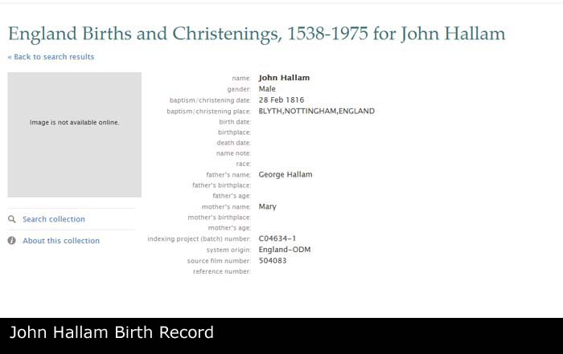

Mary
Mary - Overview
- Overview
- Chronology
- Family As A Child
- Family As A Spouse
- Pedigree
- Descendants Chart
- Gallery
| Name | Full Name | Mary |
| Forename | Mary | |
| Sex | Female | |
| Spouse | George HALLAM [Family] | |
| Children | 1. John HALLAM b. 28/02/1816 2. William HALLAM b. 08/1819 | |
| Change Date | Date | 17/04/2011 |
| Time | 19:24 | |
Mary. In 1840 Mary resided in Morton, Nottinghamshire, England. May have lived in Morton as that is where 21 year old son William lived prior to getting married. 2 sons listed. |
Children
| i | John HALLAM was born on 28/02/1816 in Blythe, Nottingham, England. |  | ||
| ii | William HALLAM1 was born in 08/1819 in Bilby, Barnby Moor, Blythe, East Retford, Nottinghamshire. He was christened on 28/08/1819 in Blythe, Nottingham, England. Before 28/11/1840 William resided in Morton, Nottinghamshire, England. He resided on 28/11/1840 in Worksop, Nottinghamshire, England. William resided on 30/03/1851 in Bilby, Barnby Moor, Blythe, East Retford, Nottinghamshire. William was a Agricultural Labourer / Shepherd on 30/03/1851 in Bilby, Barnby Moor, Blythe, East Retford, Nottinghamshire. On 07/04/1861 he was a Agricultural Labourer / Shepherd in Bilby, Barnby Moor, Blythe, East Retford, Nottinghamshire. On 07/04/1861 William resided in Bilby, Barnby Moor, Blythe, East Retford, Nottinghamshire. On 02/04/1871 he resided in Worksop, Nottinghamshire, England. On 03/04/1881 he resided in 5 Bracebridge, Worksop, Nottinghamshire, England. On 05/04/1891 he resided in 5 Bracebridge, Worksop, Nottinghamshire, England. |  |
Notes
1. William worked as a shepherd around Bilby Moor. After marrying Maria Reynolds from nearby Worksop they moved between Worksop and Bilby and raised a family. In 1871 they appear to be living with or next door to the Mallender family (where John Mallender is also from Barnby and Mary Mallender is also from Worksop). By 1881 they have moved to 5 Bracebridge, with Maria and youngest son Walter. By 1891 (still at 5 Bracebridge) Walters has left home but now they have granddaughter Maria Mallender living with them.; [Note Record]
Web page generated using a registered copy of GedScape software, licensed by Mark Watkin